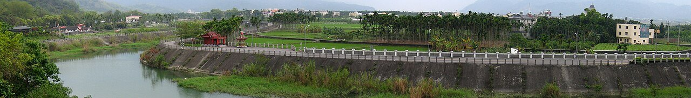

ABOUT
攝影：winstonlee／CC0
策展理念
我們想讓觀眾帶著故事去集集，也帶著集集回家。
展覽命題
一座小鎮，如何記住過去，又重新站起來？
很多人知道集集，是因為九二一。但在那之前，集集已經因為一條鐵道熱鬧了將近八十年；在那之後，它又花了二十多年，把車站、廟宇與書院一一找回來。
本展沿著一條真實的散步路線，把「鐵道、土地、重生」三種記憶串在一起。觀眾可以先在線上讀故事，再到現場看見它。
- 目標觀眾準備到集集旅行的年輕旅人、親子家庭，以及想認識地方故事的學生。
- 策展方法以真實可走的路線編排展區，每一段文字都附出處。
- 網站設計手機優先、快速載入，互動元件都能用鍵盤操作。
給修課同學
這個網站是怎麼做出來的？
這是課程的教師示範網站，用的工具和你們一樣：GitHub Codespaces 編輯、Copilot 協作、GitHub Pages 發布。
內容文字依公開資料改寫，每一筆出處都列在「參考資料與授權」頁。
圖片全部來自 Wikimedia Commons，逐張核對作者與授權後才使用。
互動時光軸、路線圖、前後對照、散步地圖、行程分頁、集章任務，都是純 HTML／CSS／JavaScript。
AI 使用聲明
我們怎麼和 AI 合作
本網站的版面、程式與部分文字初稿由 AI 工具協助產生；所有事實皆由策展人對照原始資料查證、改寫並確認。重要的 AI 提示詞與修改過程，記錄在網站原始碼的 PROMPTS.md。
如果你發現內容有誤，歡迎到本網站的 GitHub 頁面開 Issue 告訴我們。